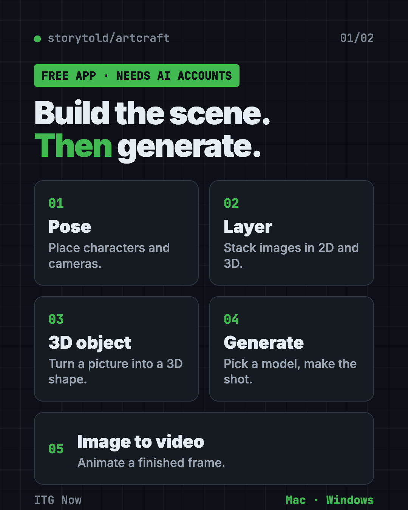
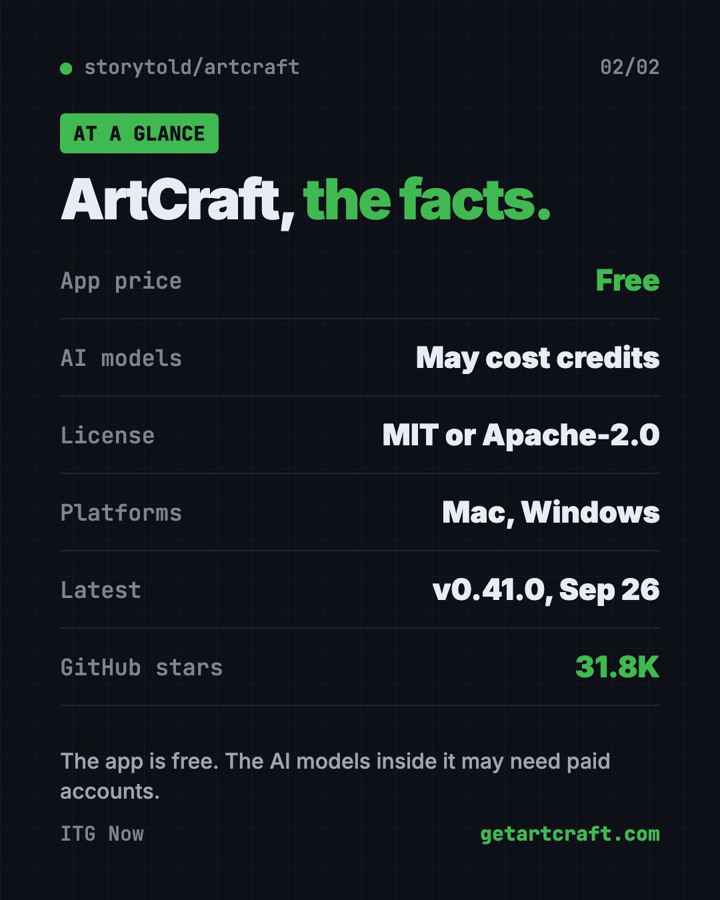

ArtCraft: Free AI Video and Image Studio (2026)
- Published 18 Oct 2026
- 7 min read
- License MIT or Apache-2.0
- By the ITG Now team
In this guide (13)
- Key takeaways
- Is there a free AI video and image studio for Mac and Windows?
- What is ArtCraft?
- How does ArtCraft work?
- How to use ArtCraft (real examples)
- Is ArtCraft really free?
- ArtCraft at a glance
- Who should use ArtCraft?
- How to install ArtCraft
- Let Claude or Codex set it up for you
- What are ArtCraft's limits?
- Our take
- FAQ
ArtCraft is a free AI video and image studio for Mac and Windows. You build your scene first, with characters, cameras and layers. Then you ask an AI model to make the picture or clip, so you don't just cross your fingers.
Here's what it does, what it really costs, and how to install it. You'll also see how to let an AI helper do the setup.
Key takeaways
- The app is free and open source. The README says it is dual-licensed under MIT or Apache-2.0.
- Scene first, prompt second. You pose characters, place cameras and stack images before anything is generated.
- The AI models may cost money. The app lists models like Sora, Midjourney and Veo. Those can need their own accounts or credits, and you'll want to check before you start.
- Mac and Windows. The latest release is v0.41.0, from September 26, 2026.
- Popular. About 31.8K stars on GitHub, and it gained 18.5K in one week.

Is there a free AI video and image studio for Mac and Windows?
Yes. ArtCraft is a free AI video and image studio you install on your own computer.
What is ArtCraft?
ArtCraft is an app for making AI images and videos with more control. Its makers call it "the IDE for artists." An IDE is the workspace programmers use to build things, so the idea is a workspace for artists.
Most AI tools work like this: you type a prompt and hope. It's a bit of a lottery. ArtCraft lets you build the scene first. The README says, "Build the scene before you generate it."
It's shared on GitHub by the team at storytold, which has had the repo since 2022.
How does ArtCraft work?
You start in a canvas and build what you want to see. Then you pick an AI model and generate. From the README, the main tools are:
- Character posing. Pose a figure and set your camera before the final shot.
- 2D image layers. Stack images, remove backgrounds and draw on top.
- 3D image layers. Place backdrops, props and foregrounds so the scene has depth.
- Image to 3D. Turn a picture into a 3D object you can move, turn and frame.
- Quick prompts. You can also just type a prompt for an image, then fix it with masks and drawing.
- Image to video. Animate a finished picture with the video model you choose.
A model is the trained AI "brain" that makes the picture. ArtCraft lets you pick between many, including Nano Banana, GPT Image, FLUX, Seedance, Kling and Veo.
How to use ArtCraft (real examples)
- Plan a short film. Pose two characters in one room and frame three camera shots before you generate anything.
- Make a product ad. Cut out your product photo, drop it on a new backdrop, then animate it.
- Design a poster. Layer images in 2D, draw on top and ask the AI to polish it.
- Build a story world. Reuse the same location across several shots so it looks consistent.
- Bring a drawing to life. Start from one picture and turn it into a short video.
💡 Tip: Start with one simple scene and one model. Add more layers once you see how the AI responds.
Is ArtCraft really free?
The app is free. The README doesn't list a price for the app itself.
The catch is the AI models. ArtCraft connects to services such as Grok, Midjourney, Sora and World Labs, and to its own catalog of 62 models. Some are marked as currently disabled or restricted. The README doesn't list prices, so check each model's cost inside the app before you make a lot of clips.
⚠️ Heads up: A free app doesn't mean free videos. Check credits and accounts for the model you pick.
ArtCraft at a glance
| App price | Free |
| AI model costs | May need credits or your own accounts |
| Platforms | Mac and Windows (Linux: build from source) |
| License | MIT or Apache-2.0 |
| Latest version | v0.41.0 (September 26, 2026) |
| Best for | Creators who want control over scenes, not just prompts |

Who should use ArtCraft?
- Filmmakers and storytellers who want to plan shots.
- Designers who like layers and want AI inside the same workspace.
- Marketers who need product images and short clips.
- Hobbyists curious about 3D scenes without learning heavy 3D software.
It's less useful if you just want one quick picture from one sentence. A simple chat-based image tool is faster for that.
How to install ArtCraft
The README points to two places to download it.
- Go to the download page at getartcraft.com, or open the Releases page on GitHub.
- Download the file for your computer. There are builds for Windows and macOS.
- Install it like any other app.
- Open it and pick an AI model. Sign in to the service for that model if it asks.
- Build a scene, then generate.
Linux is not in the main download list. The README says you can build it from source, which is a job for developers.
⚠️ Heads up: Only download from getartcraft.com or the project's GitHub Releases page.
Let Claude or Codex set it up for you
Claude Code and OpenAI Codex are AI helpers that can run setup steps on your computer. You paste a request, it does the steps, and you approve each one.
Copy and paste this:
Please help me install ArtCraft, the free AI image and video app.
1. Check whether my computer is a Mac or Windows PC.
2. Find the right download on github.com/storytold/artcraft/releases or getartcraft.com.
3. Tell me what each step does before you run it.
4. Help me pick one AI model to start with and explain if it costs money.
Then try asking:
Explain what each AI model in ArtCraft is good at, in plain words.
Help me plan a 3-shot scene I can build in ArtCraft: a cafe, two characters, a short chat.
💡 Tip: Only approve steps you understand. Ask "what does this do?" if something looks odd.
What are ArtCraft's limits?
- Models cost money. The app is free, many models are not.
- Some models are switched off. The README marks several as disabled or restricted.
- No Linux download. Only Windows and macOS builds are listed.
- A learning curve. Posing and 3D layers take a bit of practice.
Our take
ArtCraft's a smart way to get more control out of AI video. Building the scene first makes your results easier to repeat.
What we like:
- The app itself is free and open source.
- Many models in one place.
- Scene tools that go beyond typing a prompt.
- Very active: 31.8K stars and a release in late September.
What to watch for:
- AI models may need paid accounts.
- It asks you to learn a few new tools.
- Not on Linux as a ready download.
Like free creative tools? Read our PhotoCraft guide, a free PSD editor from the same team. Want more free creative picks? See our OpenReel Video guide.
FAQ
Is ArtCraft free?
The app is free and open source. The AI models inside it, like Sora or Midjourney, may need credits or their own accounts.
What is ArtCraft used for?
It is used to make AI images and videos. You build a scene in 2D or 3D first, then pick an AI model to generate the final result.
Does ArtCraft work on Mac and Windows?
Yes. The README lists stable downloads for Windows and macOS. Linux needs a build from source.
What license is ArtCraft under?
The README says it is dual-licensed under MIT or Apache-2.0, at your option.
Which AI models does ArtCraft support?
It lists a catalog of 62 models plus Grok, Midjourney, Sora and World Labs. Some models are disabled or restricted at the moment.
Get ArtCraft: github.com/storytold/artcraft
More free video tools
- HyperFrames HyperFrames is a free tool that makes AI video from HTML. Your AI agent writes a web page, and HyperFrames renders it into an MP4 video.
- Recordly Recordly is a free screen recorder and editor for Mac, Windows and Linux. It adds auto-zooms, a smooth cursor, webcam bubbles and styled backgrounds.
- Vorssaint Utils Vorssaint Utils is a free Mac utility app. Per-app volume, window snapping, clipboard history, a system monitor and an uninstaller behind one menu bar icon.
- OpenMontage OpenMontage is a free AI video maker. Describe a video in plain words and your AI helper researches, scripts, narrates, edits and renders it for you.
- Graphify Knowledge Graph A graphify knowledge graph turns your code, docs, PDFs and videos into one clickable map, so your AI helper looks things up instead of guessing.
- Paperclip Paperclip is a free, self-hosted app to manage AI agents like a company, with goals, an org chart, budgets, approvals and one dashboard for all the work.
Latest AI news
- Meta gives away its big Muse Spark AI for free
- GM gives OnStar an in-house AI assistant
- GitHub rebuilds Git storage for AI agent traffic
- Recursive releases open-weight coding model built mostly by AI
Keep reading

VoiceStudio: Free ElevenLabs Alternative
VoiceStudio is a free ElevenLabs alternative. Clone a voice, dub videos and turn text into speech on your own Mac, Windows or Linux computer.